Yleisohjeet
Allmänna instruktioner
Ohjeet verkossa ja Abitissa
FIXME: Ohjeet verkossa ja Abitissa
- Nämä ainekohtaiset ja yleiset ohjeet löytää verkosta osoitteessa cheat.abitti.fi.
- Dessa ämnesspecifika och allmänna instruktioner finns på nätet på adressen cheat.abitti.fi.
-
Koeympäristössä ohjeet löytyvät Valikko > Koeympäristön ohjeet
-
FIXME Meny > Instruktioner
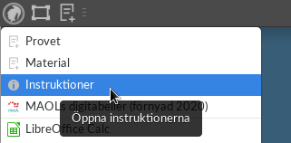
Ennen kokeen alkua
Före provet
Käynnistä koneesi USB-muistilta.
Starta datorn från USB-minnet.
Koneen käynnistyessä näytölle tulee äänitesti. Liitä kuulokkeet tietokoneeseen ja kokeile, saatko äänet kuulumaan.
Ett ljudtest visas på skärmen när datorn startar. Anslut hörlurarna till datorn och testa om du kan höra ljudet.
- Jos äänitestissä on valittavana useita äänilähteitä, kokeile vaihtaa lähdettä.
- Jos et näe äänilähteitä, sammuta tietokone klikkaamalla näytön oikean ylänurkan virtanappi-kuvaketta ja käynnistä järjestelmä toisella käynnistysvalikon vaihtoehdolla.
- Jos et saa koneen pistokemallista äänilähdettä toimimaan, käytä USB-kuulokkeita.
- Voit säätää äänenvoimakkuutta kokeen aikana käynnistämällä äänitestin näytön oikeassa ylänurkassa olevasta kuulokekuvakkeesta

- Jos et saa tietokoneen ääniä toimimaan, ota yhteyttä valvojaan. Älä aloita koetta.
- Om du kan välja flera ljudkällor i ljudtestet kan du prova att byta källa.
- Om du inte ser ljudkällorna ska du stänga av datorn genom att trycka på strömknappsikonen uppe till höger på skärmen och starta systemet med ett annat alternativ i startmenyn.
- Använd USB-hörlurar om hörlurar av pluggmodell inte fungerar.
- Du kan justera volymen under provet genom att starta ljudtestet med hjälp av hörlursikonen uppe till höger på skärmen
- Kontakta övervakaren om du inte får ljudet på datorn att fungera. Börja inte provet.
Näytön kirkkautta voit säätää klikkaamalla näytön oikean ylänurkan aurinkokuvakkeesta: 
Du kan justera skärmens ljusstyrka genom att klicka på solikonen uppe till höger på skärmen:
Säädä koejärjestelmän ulkoasu sopivaksi:
Justera provsystemets layout så att den passar dig:
- Sovellusten, koetehtävien ja -aineiston kirjasinkoko: Klikkaa näytön vasemman ylänurkan kuvaketta > Vaihda fontin kokoa (iso/normaali)
- Koetehtävien ja -aineiston kirjasinkoko: Paina näppäimistöstä Ctrl ja + (plus) tai Ctrl ja - (miinus)
- Hiiren osoittimen koko: Klikkaa näytön vasemman ylänurkan kuvaketta > Hiiri ja kosketuslevy > välilehti Teema > Osoittimen koko
-
Selaimen asetuksista voit muuttaa kirjasinta ja sen kokoa sekä tekstin ja taustan väriä. (Asetukset > Kieli ja ulkoasu)


- Valvoja voi määrätä sinut pienentämään kirjasinkokoa vilppiepäilyn välttämiseksi. Jos sinulla on erityisjärjestelynä oikeus suurentaa kirjasinkokoa, kerro tarvittaessa erityisjärjestelystä valvojalle.
- Fontstorlek för program, provuppgifter och -material: Klicka på ikonen uppe till vänster på skärmen > Byt fontstorlek (stor/normal)
- Fontstorlek för provuppgifter och -material: Tryck på Ctrl och + (plus) eller Ctrl och - (minus)
- Storlek på muspekaren: Klicka på ikonen uppe till vänster på skärmen > Mus och pekplatta > fliken Tema > Pekarstorlek
-
Du kan ändra typsnitt och fontstorlek samt text- och bakgrundsfärg i webbläsarens inställningar. (Inställningar > Språk och layout)


- Övervakaren kan be dig minska fontstorleken för att undvika misstanke om fusk. Om du som specialarrangemang har rätt att öka fontstorleken ska du vid behov informera övervakaren om specialarrangemanget.
Liitä tietokone koeverkkoon
Anslut datorn till provnätet
- Jos koe tehdään langallisessa verkossa, liitä verkkokaapeli tietokoneen verkkoliitäntään tai käytä USB-adapteria.
- Jos koe tehdään langattomassa verkossa, saat kokeen valvojilta liittämiseen tarvittavat tunnistetiedot.
- Om provet utförs i ett fast nätverk ska du ansluta nätverkskabeln till datorn nätverksanslutning eller använda en USB-adapter.
- Om provet utförs i ett trådlöst nätverk får du de identifikationsuppgifter som behövs för att ansluta till provet av övervakaren.
Kokeeseen kirjautuminen
Logga in till provet
-
Kirjoita etu- ja sukunimesi niille tarkoitettuun kohtaan.
- Tarkista, että kirjoitit nimesi oikein.
- Jos kirjoitit nimesi väärin, pyydä valvoja paikalle.
-
Kirjoita henkilötunnuksesi sille tarkoitettuun kohtaan.
- Tarkista, että kirjoitit henkilötunnuksen oikein.
- Jos kirjoitit henkilötunnuksen väärin, pyydä valvoja paikalle.
- Valitse kokeen kieli (lukiosi opetuskieli) ja koe.
- Lue ja hyväksy koejärjestelmän käyttöehdot.
- Odota, että valvoja tulee vahvistamaan kirjautumisesi. Odottaessa voit tarkistaa, että näytöllä näkyvät tiedot ovat varmasti oikein.
-
Skriv ditt för- och efternamn i det fält som är avsett för detta.
- Kontrollera att du skrev ditt namn rätt.
- Be övervakaren komma om du skrev ditt namn fel.
-
Skriv in din personbeteckning i det fält som är avsett för detta.
- Kontrollera att du skrev din personbeteckning rätt.
- Be övervakaren komma om du skrev personbeteckningen fel.
- Välj språk på provet (gymnasiets undervisningsspråk) och prov.
- Läs och godkänn provsystemets användarvillkor.
- Vänta tills övervakaren bekräftar din inloggning. Medan du väntar kan du kontrollera att uppgifterna på skärmen är korrekta.
Näin vastaat kokeeseen
Så här svarar du på provet
- Merkitse vastauksesi sille varattuun tilaan. Koejärjestelmä tallentaa vastauskentässä olevat vastauksesi automaattisesti. Vastauskentän alapuolella näkyy käyttämiesi merkkien määrä. Välilyöntejä ja rivinvaihtoja ei lasketa mukaan merkkimäärään. Jos vastauskentän merkkimäärä on rajoitettu ja määrä ylittyy, antaa järjestelmä virheilmoituksen.
- Voit tehdä muistiinpanoja ja luonnostella vastaustasi järjestelmän ohjelmilla tai paperille kokeen aikana. Tallenna ohjelmilla tekemäsi tiedostot säännöllisesti, jotta ne varmuuskopioidaan palvelimelle. Vastaus täytyy kuitenkin liittää vastauskenttään, jotta se arvostellaan.
- Koevastaukseen voi liittää erikoismerkkejä, matemaattisia kaavoja ja kuvakaappauksia. Ohjeet löytyvät alta.
-
Näin palautat aikaisemman version vastauksesta.
- Klikkaa vastausikkunan oikeassa alanurkassa näkyvää Aiemmat vastausluonnokset -linkkiä.
- Voit selailla vastausvaihtoehtoja klikkaamalla vasemmalla näkyvää valikkoa.
- Jos haluat palauttaa esikatselussa näkyvän vastausvaihtoehdon, klikkaa Palauta-nappia.
-
Käynnistä kuullunymmärtämistehtävän tallenne klikkaamalla play-painiketta (▶).
-
Jos tallenteen ääni ei kuulu, pyydä valvoja paikalle. Jos äänitteen kuuntelukertoja on rajoitettu, soittimen oikealta puolelta näet, montako kuuntelukertaa sinulla on jäljellä.

- Jos tallenteen kuuntelukertoja ei ole rajoitettu, voit kelata sitä vapaasti eteen- tai taaksepäin niin monta kertaa kuin haluat. Kuuntelukerroiltaan rajoittamattoman tallenteen soittonopeutta pystyy säätämään hiiren oikealla näppäimellä avautuvasta valikosta.
- Jos kuuntelukerroiltaan rajoitettu äänite ei kuulu, keskeytä kokeen suorittaminen heti ja kutsu valvoja. Selvitettyään ongelman valvoja voi vapauttaa viimeksi kuunnellun äänitteen sinulle uudelleen kuunneltavaksi. Vanhempaa kuin edellistä äänitettä ei palauteta. Ongelman selvittämisen aikana tehtävää ei saa jatkaa.
- Markera svaret i fältet som reserverats för det. Provsystemet sparar automatiskt dina svar i svarsfältet. Nedanför svarsfältet ser du antalet tecken du har använt. Mellanslag och radbyten räknas inte in i teckenantalet. Ifall svarsfältets teckenantal är begränsat får du ett felmeddelande.
- Du kan göra anteckningar och göra utkast på ditt svar med systemets program eller på papper under provet. Spara de filer du skapat med programmet regelbundet så att de säkerhetskopieras till servern. Svaret måste dock fogas till svarsfältet för att det ska kunna bedömas.
- Det går att bifoga specialtecken, matematiska formler och skärmdumpar till provsvaren. Anvisningar finns nedan.
-
Så här återställer du en tidigare version av svaret.
- Klicka på länken Tidigare svarsutkast nere till höger i svarsfönstret.
- Du kan bläddra bland svarsalternativen genom att klicka på menyn till vänster.
- Om du vill återställa svarsalternativet som visas i förhandsgranskningen klickar du på Återställ.
-
Spela upp inspelningen i hörförståelseuppgiften genom att klicka på play (�B6;).
-
Be övervakaren komma om du inte hör ljudet av inspelningen. Om inspelningens lyssningsgånger är begränsade ser du hur många gånger du har kvar att lyssna till höger i spelaren.

- Om inspelningens lyssningsgånger inte är begränsade kan du fritt spola den framåt eller bakåt så många gånger du vill. Uppspelningshastigheten för en inspelning med obegränsade lyssningsgånger kan justeras i menyn som öppnas med höger musknapp.
- Avbryt genast avläggandet av provet och be övervakaren komma om du inte hör en inspelning med begränsade lyssningsgånger. Efter att ha utrett problemet kan övervakaren återställa den senast avlyssnade inspelningen så att du kan lyssna på den igen. Äldre inspelningar än den föregående återställs inte. Du får inte fortsätta med uppgiften medan problemet utreds.
Kuvakaappausten lisääminen
Lägga till skärmdumpar
Tekstivastauskenttiin voi lisätä kuvakaappauksia.
Du kan lägga till skärmdumpar i fältet för textsvar.
- Ota esiin se näkymä (esim. graafi tai piirros), jonka haluat liittää vastaukseen.
- Klikkaa näytön oikean ylänurkan kamerakuvaketta

- Paina hiiren painike alas ja rajaa kuvakaappaukseen haluamasi osa näyttöä.
- Ota vastaus esille ja siirrä osoitin haluamaasi paikkaa tekstiä.
- Paina Ctrl ja V, jolloin kuvakaappaus liittyy vastaukseen.
- Ta fram den vy (t.ex. en graf eller teckning) som du vill lägga till i svaret.
- Klicka på kameraikonen uppe till höger på skärmen
- Tryck ner musknappen och begränsa skärmdumpen till önskad del av skärmen.
- Ta fram svaret och flytta pekaren till önskad plats i texten.
- Tryck på Ctrl och V för att lägga till skärmdumpen i svaret.
Matemaattisten kaavojen lisääminen
Lägga till matematiska formler
Tekstivastauskenttiin voi lisätä matemaattisia kaavoja.
Du kan lägga till matematiska formler i fältet för textsvar.
- Aktivoi vastausikkuna klikkaamalla sitä.
-
Yksittäisiä matemaattisia merkkejä voi lisätä koesivun ylälaidassa olevasta valikosta:

-
Lisää yksittäisiä matemaattisia merkkejä löydät nuolikuvakkeen takaa:

- Varsinaisen kaavaeditorin voit avata klikkaamalla koesivun vasemmassa ylänurkassa olevaa Lisää kaava -painiketta.
-
Kaavaa voit kirjoittaa kahdella eri tavalla.
- Editorin vasemmalle puolelle voit lisätä kaavahahmoja koesivun yläosasta ja täyttää harmaisiin laatikoihin merkintöjä.
- Editorin oikealla puolella voit muokata kaavaa LaTeX-kuvauskielellä.
- Kaavaeditori pyrkii päivittämään molempia esitysmuotoja, jos toista muokataan. Jos LaTeX-esitysmuotoa ei voida näyttää vasemmalla esimerkiksi virheellisen syntaksin mukaan, on vasen puoli valkoinen.
- Uuden kaavarivin saa painamalla rivinvaihtonäppäintä.
- Kaava "suljetaan" klikkaamalla hiirellä editorin ulkopuolella.
- Arvostelussa näkyy suljettu sinipohjainen kaava. Jos kaavan tilalla on punainen varoituskolmio, on kaavassa virhe.
- Aktivera svarsfönstret genom att klicka på det.
-
Enskilda matematiska tecken kan läggas till från menyn uppe på provsidan:
-
Du hittar fler enskilda matematiska tecken bakom pilikonen:
- Du kan öppna den egentliga formelredigeraren genom att klicka på Lägg till formel uppe till vänster på provsidan.
-
Du kan skriva formeln på två olika sätt.
- Till vänster i redigeraren kan du lägga till formelmodeller från övre delen av sidan och fylla i markeringar i de grå lådorna.
- Till höger i redigeraren kan du redigera formeln med beskrivningsspråket LaTeX.
- Formelredigeraren strävar efter att uppdatera båda formerna om den ena redigeras. Om LaTeX-formen inte visas till vänster till exempel på grund av en felaktig syntax, är den vänstra sidan vit.
- Tryck på radbytesknappen för att få en ny formelrad.
- Formeln ”stängs” om du klickar med musen utanför redigeraren.
- I bedömningen visas en sluten blåbottnad formel. Om en röd varningstriangel visas istället för formeln finns det ett fel i formeln.
Työskentely-ympäristö
Arbetsmiljö
-
Koetehtävät ja -vastaukset sisältävän ikkunan voit avata klikkaamalla näytön vasemman ylänurkan kuvaketta > Koe
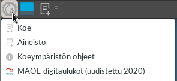
-
Du kan öppna fönstret med provuppgifter och -svar genom att klicka på ikonen uppe till vänster på skärmen > Prov
-
Näin saat aineistot näkyville.
- Tehtäviin liittyvät aineistot aukeavat tehtävän yhteydessä olevista linkeistä omalle välilehdelleen. Aineistot aukeavat myös klikkaamalla näytön vasemman ylänurkan kuvaketta > Aineisto.
-
Då får du fram materialet.
- Uppgiftsmaterialet öppnas på en egen flik via länkarna i anslutning till uppgiften. Du kan också öppna materialet genom att klicka på ikonen uppe till vänster på skärmen > Material.
-
Sinulla voi olla samaan aikaan käynnissä useita ohjelmia.
-
Näet käynnissä olevat ohjelmat näytön yläreunan sovelluspalkista.
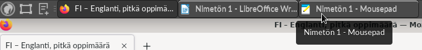
- Voit vaihtaa käytössä olevaa ikkunaa klikkaamalla ohjelman kuvaketta.
-
Jos klikkaat jo valmiiksi käytössä olevan ohjelman kuvaketta, ohjelma piilotetaan. Nimen ympärille ilmestyvät hakasulut. Saat ohjelman takaisin näkyviin klikkaamalla ohjelman kuvaketta toistamiseen.

-
Koetehtävät ja -aineistot ovat Firefox-ohjelmassa. Firefoxissa on omat välilehtensä, jotka toimivat samoin kuin yläpalkin välilehdet.
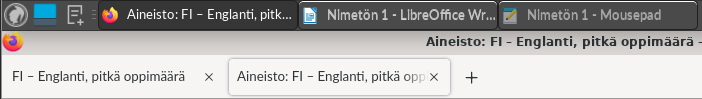
-
Du kan köra flera program samtidigt.
-
Du ser vilka program som körs i programbalken uppe på skärmen.
- Du kan växla fönster genom att klicka på programmets ikon.
-
Om du klickar på ikonen för ett program som redan körs döljs programmet. Hakparenteser visas runt namnet. Du får fram programmet igen genom att klicka på programmets ikon.

-
Provuppgifterna och -materialet finns i Firefox. Firefox har egna flikar som fungerar på samma sätt som flikarna i övre balken.
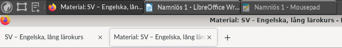
-
Koejärjestelmässä olevat ohjelmat käynnistyvät klikkaamalla näytön vasemman ylänurkan kuvaketta. Käynnistä ohjelma klikkaamalla haluamasi ohjelman kuvaketta.
-
Du startar programmen i provsystemet genom att klicka på ikonen uppe till vänster på skärmen. Starta programmet genom att klicka på ikonen för önskat program.
-
Koejärjestelmässä olevia ohjelmaikkunoita voi sulkea monella eri tavalla.
- Klikkaamalla ikkunan oikean ylänurkan X-kuvaketta.
-
Klikkaamalla ikkunan kuvaketta näytön yläpalkissa oikealla ja valitsemalla Sulje.
-
Du kan stänga programfönster i provsystemet på många olika sätt.
- Klicka på X-ikonen uppe till höger i fönstret.
-
Klicka på fönstrets ikon till höger i den övre balken och välj Stäng.

-
Näin järjestelet ikkunoiden sijaintia ja kokoa:
- Voit suurentaa ikkunan koko näytön kokoiseksi klikkaamalla näytön oikeasta ylänurkasta ruutukuvaketta

- Voit palauttaa suurennetun ikkunan normaaliksi klikkaamalla näytön oikeasta ylänurkasta kaksoisruutukuvaketta

-
Ikkunoita voi siirtää näytöllä tarttumalla ikkunan yläpalkkiin:

-
Firefoxin välilehdet voi irrottaa omiksi ikkunoikseen tarttumalla sen otsikkoon kiinni ja siirtämällä sen irti selaimesta:

-
Kaksi erillistä ikkunaa voi järjestää vierekkäin raahaamalla ne näytön reunoihin.


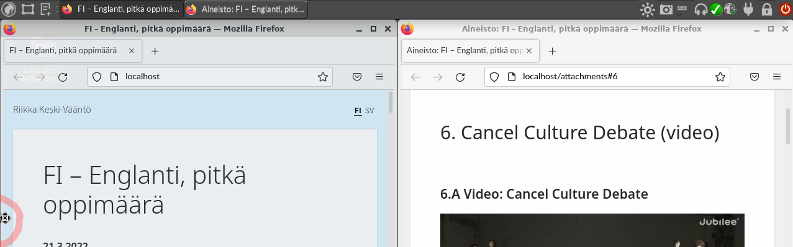
-
Så här ordnar du fönstrens placering och storlek:
- Du kan förstora fönstret till hela skärmen genom att klicka på skärmikonen uppe till höger
- Du kan återställa ett förstorat fönster till normal storlek genom att klicka på dubbelskärmikonen uppe till höger
-
Ta tag i fönstrets övre balk för att flytta på det:

-
Du kan flytta flikarna i Firefox till ett eget fönster genom att ta tag i dess rubrik och flytta dem från webbläsaren:
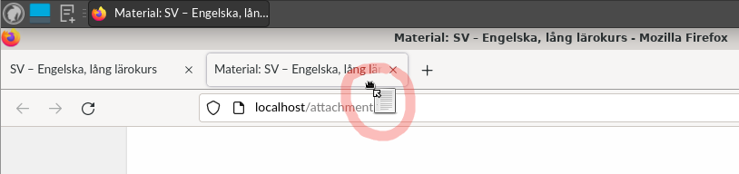
-
Du kan ställa två separata fönster bredvid varandra genom att dra dem till skärmens kanter.
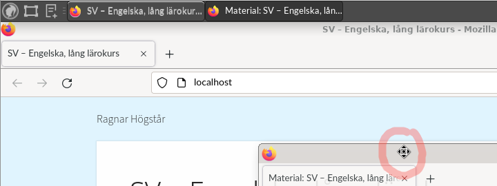


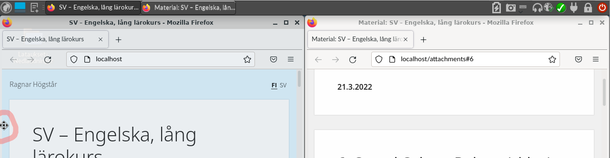
-
Eri kielten vaatimia kirjaimia ja muita erikoismerkkejä voit tuottaa kahdella eri tavalla:
- Vaihtamalla näppäimistön näppäimistökartan klikkaamalla näytön yläpalkin näppäimistökuvaketta ja valitsemalla haluamasi näppäimistökartan. Käytössä olevan näppäinten sijainnit näet sovellusvalikon ohjelmalla “Näppäimistökartta”.
- Avaamalla koeympäristön ohjeet (näytön vasemman ylänurkan kuvake > Koeympäristön ohjeet > Näppäimistö) ja klikkaamalla haluamaasi erikoismerkkiä. Liitä merkki haluamaasi paikkaan leikepöydältä painamalla Ctrl ja V.
-
Du kan skapa bokstäver och andra specialtecken på olika språk på två olika sätt:
- Du kan byta tangentbordets tangentbordskarta genom att klicka på tangentbordsikonen i den övre balken på skärmen och välja önskad tangentbordskarta. Du ser var tangenterna som är i användning är placerade i programmenyn med programmet "Tangentbordskarta".
- Öppna anvisningarna för provmiljön (ikonen uppe till vänster på skärmen > Anvisningar för provmiljön > Tangentbord) och klicka på önskat specialtecken. Lägg tecknet till önskad plats från klippbordet genom att trycka på Ctrl och V.
- Jos poistut paikaltasi kokeen aikana esimerkiksi vessaan, kytke näytönsäästäjä päälle klikkaamalla lukon kuvaa näytön yläreunassa.
- Om du lämnar din plats för att till exempel besöka toaletten under provet ska du starta skärmsläckaren genom att klicka på låsikonen på skärmens övre kant.
Tiedostojen käsittely
Filhantering
Koesivulle laatimasi vastaukset talletetaan automaattisesti. Sovelluksiin (esim. LibreOffice, GIMP, GeoGebra) dokumentit on talletettava tiedostoiksi. Liitä sovelluksessa laatimasi vastaus vastauskenttään joko tekstinä tai kuvakaappauksena.
Dina svar sparas automatiskt på provsidan. I program (t.ex. LibreOffice, GIMP, GeoGebra) ska dokumenten sparas som filer. Bifoga ditt svar från programmet till svarsfältet antingen som text eller som skärmdump.
-
Sovellusten tiedot talletetaan tiedostoksi sovelluskohtaisella toiminnolla (yleensä Tiedosto > Tallenna nimellä). Esimerkki LibreOffice Calcissa:

-
Uppgifterna i programmet sparas som en fil med en programspecifik funktion (vanligtvis Arkiv > Spara som). Exempel i LibreOffice Calc:
- Tallentamasi tiedostot varmuuskopioidaan palvelimelle.
- De filer du sparat säkerhetskopieras till servern.
-
Voit avata tallentamasi tiedoston klikkaamalla yläpalkin työpöytänappia
 . Se pienentää kaikki avoimet ikkunat näytön yläpalkkiin. Nyt voit avata tiedoston muokattavaksi kaksoisklikkaamalla sitä:
. Se pienentää kaikki avoimet ikkunat näytön yläpalkkiin. Nyt voit avata tiedoston muokattavaksi kaksoisklikkaamalla sitä:

-
Du kan öppna den sparade filen genom att klicka på skrivbordsknappen i den övre balken . Den minimerar alla öppna fönster till skärmens övre balk. Dubbelklicka på filen för att öppna den för redigering:
-
Voit poistaa tiedostoja klikkaamalla niitä hiiren oikealla napilla ja valitsemalla Poista:

-
Du kan ta bort filer genom att högerklicka på dem och välja Ta bort:

Kokeen päättäminen
Avsluta provet
Tarkista, että olet vastannut kaikkiin vaadittuihin kysymyksiin.
Kontrollera att du har svarat på alla frågor som krävs.
Tarkista, että vastauskentät ovat kokonaan tyhjiä niiden kysymysten osalta, joihin et halua vastata.
Kontrollera att svarsfälten är helt tomma för de frågor som du inte vill svara på.
Jos olet palauttamassa liian monta vastausta arvosteltavaksi tai ylittämässä vastaukselle asetetun merkkimäärärajoituksen, saat asiasta varoituksen. Varoitus näkyy sivun alalaidassa punaisella tekstipohjalla. Esimerkki varoituksesta:

Varoitus poistuu, kun tyhjennät ylimääräisen tekstivastauskentän tai lyhennät vastaustasi.
Om du returnerar för många svar för bedömning eller överskrider teckenantalsbegränsningen i svarsfältet får du en varning. Varningen syns på sidans nedre kant på rött textbotten. Exempel på varning:

Varningen försvinner då du tömmer det överflödiga svarsfältet eller då du förkortar ditt svar.
Päätä koe klikkaamalla tehtäväsivun alareunassa olevaa Päätä koe -painiketta.
Avsluta provet genom att klicka på knappen Avsluta provet längst ner på uppgiftssidan.
Kun olet päättänyt kokeen, sammuta kone näytön oikeassa ylänurkassa olevasta virtakytkinkuvakkeesta.
När du har avslutat provet ska du stänga av datorn genom att klicka på strömknappsikonen uppe till höger på skärmen.
Mitä teet, kun...
Vad gör du om...
Jos tietokone toimii yllättävästi, ota heti yhteyttä valvojaan.
Om datorn fungerar på ett oväntat sätt ska du genast kontakta övervakaren.
Viittaa valvoja välittömästi paikalle, jos
Be omedelbart övervakaren komma till din plats om
- huomaat tekeväsi väärää tai vääränkielistä koetta
- du märker att du gör fel prov eller ett prov på fel språk
- et saa ääniä kuulumaan kuulokkeista
- det inte kommer ljud från hörlurarna
- et häiriön takia kuullut kuullunymmärtämistehtävän tallennetta
- du inte hörde inspelningen av hörförståelseuppgiften på grund av störning
- järjestelmä ilmoittaa, että verkkoyhteys katkeaa, eikä verkkoyhteys palaa välittömästi
- systemet meddelar att nätförbindelsen bryts och om nätförbindelsen inte genast återvänder
- koneesi lakkaa toimimasta tai kohtaat muita ongelmia tai häiriöitä
- din dator slutar fungera eller du stöter på andra problem eller störningar
...sinulla on liikaa välilehtiä
...du har för många flikar
Pyri siihen, että sinulla ei ole avoinna ylimääräisiä välilehtiä tai käynnistettyjä ohjelmia. Ne tekevät käytöstä sekavaa ja voivat johtaa tietokoneen toimintahäiriöihin, jos tietokoneen muisti loppuu.
Sträva efter att inte har extra flikar eller startade program öppna. De gör användningen rörig och kan leda till störningar i datorns funktion om datorns minne tar slut.
Näin voit sulkea koe- ja aineistosivun välilehdet sekä ylimääräiset ohjelmat:
Så här kan du stänga flikarna på prov- och materialsidan samt extra program:
Aloita sulkemalla koe- ja aineistosivut. Koesuorituksesi talletetaan automaattisesti, joten ne eivät katoa sivuja suljettaessa.
Börja med att stänga prov- och materialsidorna. Dina provprestationer sparas automatiskt, de försvinner inte när sidorna stängs.
-
Aktivoi yläpalkista joku koesivu, jonka tunnistat Firefox-ohjelman kuvakkeesta:
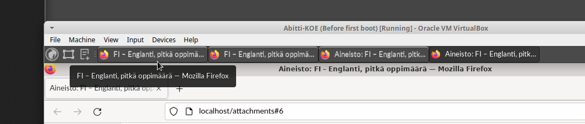
-
Aktivera en provsida i övre balken som du känner igen med ikonen för Firefox:

-
Sulje aktivoimasi Firefox-ikkuna klikkaamalla ikkunan oikean ylänurkan X-nappia:
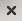
-
Stäng Firefox-fönstret genom att klicka på X uppe till höger i fönstret:
- Toista tämä kaikille koe- ja aineistosivuille.
- Upprepa detta för alla prov- och materialsidor.
Sulje sen jälkeen kaikki sovellukset. Jos haluat tallettaa keskeneräiset työt, sinun on tehtävä se ohjelmakohtaisella tallennustoiminnolla (yleensä Tiedosto > Tallenna nimellä).
Stäng därefter alla program. Om du vill spara pågående arbeten måste du göra det med en programspecifik lagringsfunktion (vanligtvis Arkiv > Spara som).
-
Aktivoi suljettava ohjelma näytön yläpalkista:
-
Aktivera en provsida i övre balken som du känner igen med ikonen för Firefox:
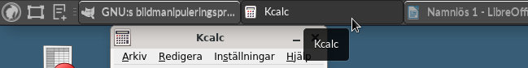
- Käytä ohjelmakohtaista tallennustoimintoa (yleensä Tiedosto > Tallenna nimellä). Tallentamasi tiedostot varmuuskopioidaan koetilan palvelimelle.
- Använd programspecifik lagringsfunktion (vanligtvis Arkiv > Spara som). De filer du sparat säkerhetskopieras till provlokalens server.
- Toista tämä kaikille sovelluksille.
- Upprepa detta för alla program.
Jos olet jatkamassa koetta, voit:
Om du ska fortsätta provet kan du:
- Avata uuden koe- ja aineistosivun yllä olevien ohjeiden mukaisesti.
- Öppna en ny prov- och materialsida enligt anvisningarna ovan.
- Avata tallentamasi tiedoston muokattavaksi yllä olevien ohjeiden mukaisesti.
- Öppna filen du sparat för redigering enligt anvisningarna ovan.
Jos olet sammuttamassa tietokoneen valvojan käskystä, tarkista, että näytön yläkulmassa löytyy tiedostojen varmuuskopioinnin kuvake: 
Om du håller på att stänga av datorn på övervakarens uppmaning ska du kontrollera att ikonen för säkerhetskopiering av filer visas uppe på skärmen:
...kaavaeditorin esikatselu on tyhjä
...formelredigerarens förhandsgranskning är tom


Jos muokattava kaava ei näy editorin vasemmalla puolella, muokattava esikatselu ei osaa näyttää editorin oikealla puolella olevaa LaTeX-koodia. Kokeile jotain näistä:
Om formeln som ska redigeras inte syns till vänster i redigeraren, kan förhandsgranskningen inte visa LaTeX-koden till höger i redigeraren. Prova något av följande:
- Sulje kaavaeditori. Jos sinisellä pohjalla näkyvä kaava on oikea, kaikki on kunnossa. Arvostelu perustuu sinisellä pohjalla olevaan kaavaan.
- Stäng formelredigeraren. Om formeln på blå botten är rätt, är allt i sin ordning. Bedömningen grundar sig på formeln på blå botten.
- Voit yrittää palauttaa aiempaa toimivaa kaava Aiemmat vastausluonnokset -toiminnolla.
- Du kan försöka återställa en tidigare fungerande formel med funktionen Tidigare svarsutkast.
- Voit jatkaa kaavan muokkausta LaTeX-koodia ja katsomalla kaavaa sulkemalla sen.
- Du kan fortsätta att redigera formeln i LaTeX-koden och titta på formeln genom att stänga den.
- Ellei mikään edellä mainituista ohjeista ratkaise ongelmaa, voit joutua aloittamaan kaavan kirjoittamisen uudelleen.
- Om ingen av de ovan nämnda anvisningarna löser problemet kan du bli tvungen att skriva formeln på nytt.
- Voitko kirjoittaa kaavan jollain muulla työkalulla, esimerkiksi sovelluksella?
- Kan du skriva formeln med något annat verktyg, till exempel en applikation?
...kaavaeditorilla laaditun kaavan paikalla on varoituskolmio
...det är en varningstriangel på formeln som skapats med formelredigeraren


Jos suljetun sinipohjaisen kaavan paikalla on varoituskolmio, ei koejärjestelmä ymmärrä kaavan LaTeX-koodia eikä kaava siksi näy arvostelussa. Kokeile jotakin näistä:
Om det finns en varningstriangel på platsen för en sluten formel med blå botten förstår provsystemet inte formelns LaTeX-kod och formeln syns därför inte i bedömningen. Prova något av följande:
- Voit yrittää palauttaa aiempaa toimivaa kaavaversiota Aiemmat vastausluonnokset -toiminnolla.
- Du kan försöka återställa en tidigare fungerande formelversion med funktionen Tidigare svarsutkast.
- Avaa kaava ja muokkaa sitä, kunnes varoituskolmio poistuu.
- Öppna formeln och redigera den tills varningstriangeln försvinner.
- Ellei kumpikaan edellä mainituista ohjeista ratkaise ongelmaa, voit joutua aloittamaan kaavan kirjoittamisen uudelleen.
- Om ingen av de ovan nämnda anvisningarna löser problemet kan du bli tvungen att skriva formeln på nytt.
- Voitko kirjoittaa kaavan jollain muulla työkalulla, esimerkiksi sovelluksella?
- Kan du skriva formeln med något annat verktyg, till exempel en applikation?